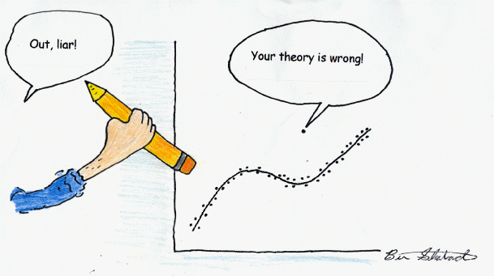
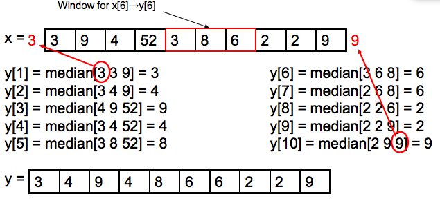

The problem, as always, is what the heck does one mean by "outlier" in these contexts. Seems to be like pornography -- "I know it when I see it." - Berton Gunter, R-help, December 2009

Outlier Definition
An observation in a data set which appears to be inconsistent with the remainder of that set of data
Easy to handle if it is generated by a regular process
## Median Filter
$$ y[m] = median\\{ x[m-\frac{w}{2}, m+\frac{w}{2}] \\} $$
where $w$ is the window size whose median will replace the original data point.
#### Properties
- Not linear
- Does not smooth the signal. (Does not blur the images)
- Robust to outliers!
Toy Example

Window size: $w$ = 3
Extend left-most and right-most values to compute boundaries